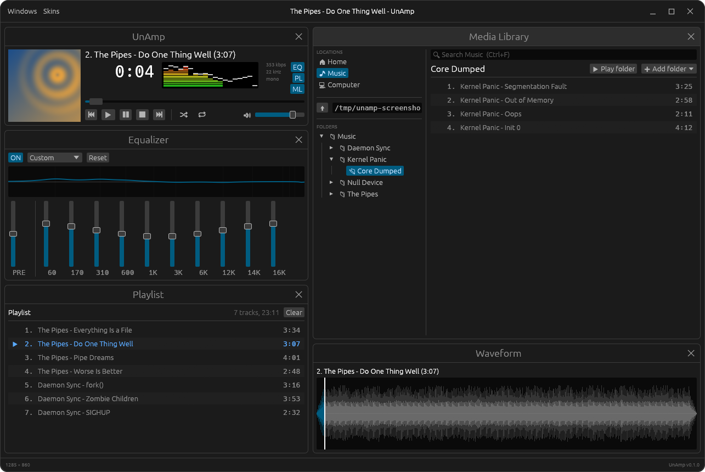

Native Desktop Music Player
It really whips the llama's ass, on Unix. (UnAmp, as in Unix.)
UnAmp is a native Rust music player in the spirit of Winamp.
Point it at a folder, a mounted drive or a network share and play what's
there: album art, a scrolling title, a big time display, a proper bar
spectrum analyzer and a 10-band equalizer, in separate Player, Equalizer,
Playlist and Media Library windows. It even draws classic Winamp
.wsz skins.
GitHub README • Releases • crates.io • Skinning
Download
Available as a .deb for Ubuntu and Debian-based distributions (x86-64).
Or from a terminal:
wget https://github.com/divanvisagie/UnAmp/releases/download/v0.1.0/unamp_0.1.0-1_amd64.deb
sudo apt install ./unamp_0.1.0-1_amd64.deb
Upgrading: Ubuntu's App Center shows "Installed" for a newer
.deb when any version is already installed, and won't upgrade it
(app-center#2190). Install the new version with apt instead,
from the folder you downloaded it to:
sudo apt install ./unamp_0.1.0-1_amd64.debOlder versions and release notes are on the releases page.
Or install from crates.io
(Linux, with the Rust toolchain and the ALSA headers:
sudo apt install libasound2-dev pkg-config):
cargo install unamp
unampScreenshot

What It Does
- Player, Equalizer, Playlist, Media Library and Waveform windows, tiled to fill the app or floating with snap-to-grid
- Plays MP3, FLAC, Ogg Vorbis, WAV, AAC/ALAC, AIFF, CAF and MKA from local folders, drives and network shares (NFS/SMB/sshfs/GVfs)
- Album art from embedded covers or cover images beside the tracks
- Bar spectrum analyzer with falling peaks, and a DAW-style waveform you can click to seek
- 10-band graphic equalizer with preamp, presets and a live response curve
- Playlist with drag-to-reorder, an up-next queue, shuffle and repeat, saved as standard M3U files
- Search anything under the current location with Ctrl+F, no library database needed
- GNOME media controls, media keys and
playerctlthrough MPRIS - Themes in TOML, and classic Winamp
.wszskins drawn pixel for pixel from their own bitmaps - Follows the desktop's light/dark setting, with its own themed window frame
Development
cargo build
cargo run --release
cargo test
Live-reload dev loop (requires cargo-watch):
cargo install cargo-watch
make devPackaging
The Makefile builds a Linux .deb.
make # list all targets
make build # build the .deb
make install # build and install the .debArchitecture
Design decisions are documented as they're made:
License
GPL-2.0-only. See LICENSE.